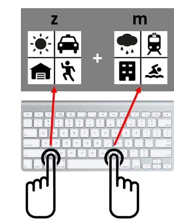

Please read these instructions carefully before you begin the experiment.
We are interested in how people make decisions under limited information and time. In this experiment, you will be asked to compare two stimuli and select the one that is more likely to win in a given trial.
On each trial, you will be presented with two stimuli that contain icons from four different categories. Each category has a designated location, e.g. weather (sunny/rainy) in location 1, transportation (subway/taxi) in location 2, activity (running/swimming) in location 3 and building (house/apartment) in location 4. We refer to each of these distinct categories as cues:
These cues are assigned with fixed winning probabilities, which can be used to predict a stimulus with a higher chance of winning. Thus, your goals are (1) to learn about the properties of each cue by trial-and-error and (2) to win as many trials as possible. To expedite the learning process, it is critical that you make a valid response and get feedback on each trial even if you are not sure about the right answer. Every time you win a trial, you will receive 1 point and a running tally of your score will be shown on the screen throughout the experiment.
|  | This is an image of what the screen will look like during the experiment. As previously mentioned, there will be two distinct stimuli, each with some combination of the four cues. Using your knowledge about the cues, you will select a stimulus with higher winning probability. For example, consider the following case: After trying out 50 trials, let's assume that you have a pretty good idea about these cues. If you've learned that sunny has a better chance of winning than rainy, and taxi has a better chance of winning than subway, then you will be more likely to win this trial by selecting the left stimulus. However, let's assume that you've also learned that apartment is better than house. In this case, you will need to rank these cues from most important to least important, which will help you to determine whether to change your decision or not. (These examples, of course, are not necessarily true. Probabilities are assigned randomly at the beginning of the experiment for each participant.) | |
Keys You will indicate your decision by pressing a button: z = left stimulus (left index finger) m = right stimulus (right index finger) |
Please note that feedback is probabilistic, which means that you won't always get the same feedback even if you make the same decisions across trials. For example, if a stimulus' overall winning percentage is 70%, it means that this stimulus will win 7 times out of 10 trials. Please keep in mind that since your goal is to maximize the number of wins, regardless of feedback, it is always beneficial to choose a stimulus with a higher chance of winning.
The experiment is divided into 2 phases:
Overall, please respond as quickly and as accurately as possible once you've reached a decision. You may take a short break between blocks. However, please do not do anything else while doing this task. It is very important to stay focused during the experiment.
Your HIT will be approved if you satisfy following criteria, which are reasonable thresholds based on our previous studies.